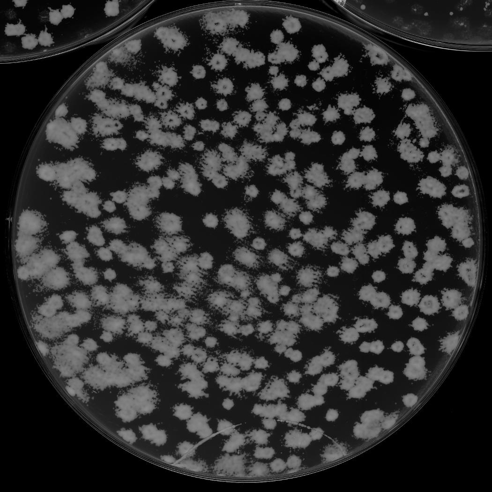
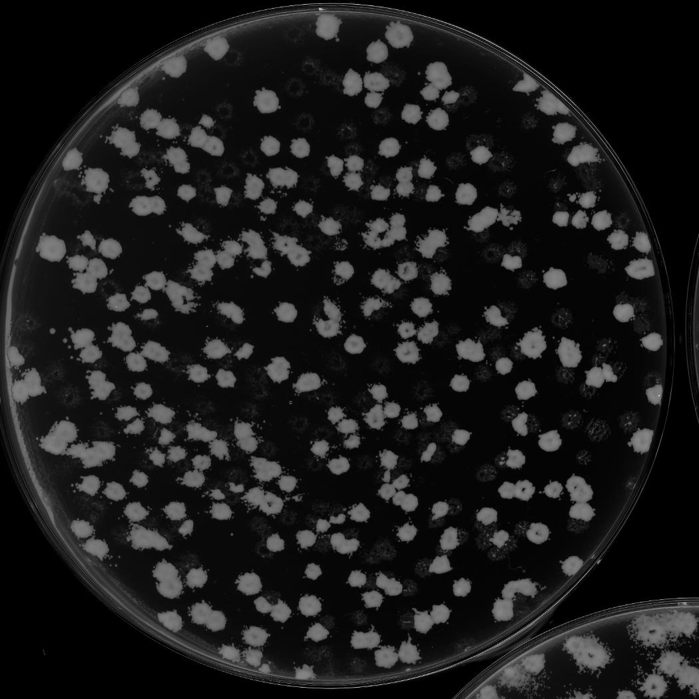
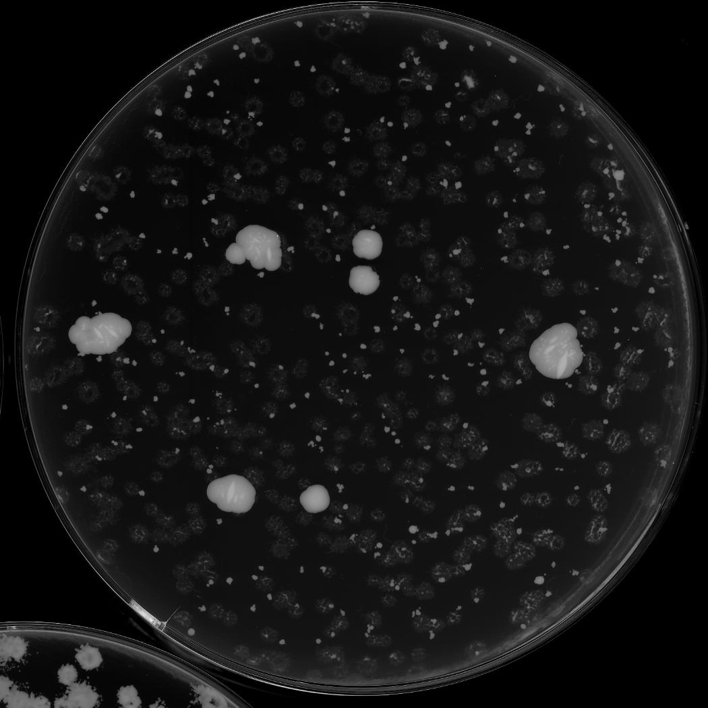
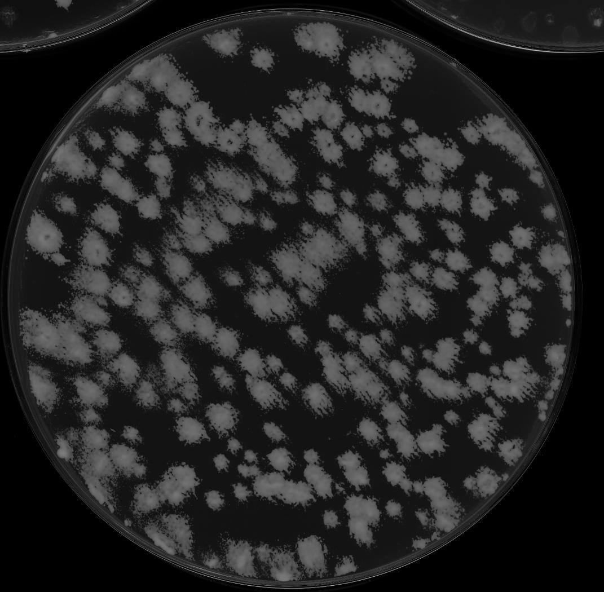
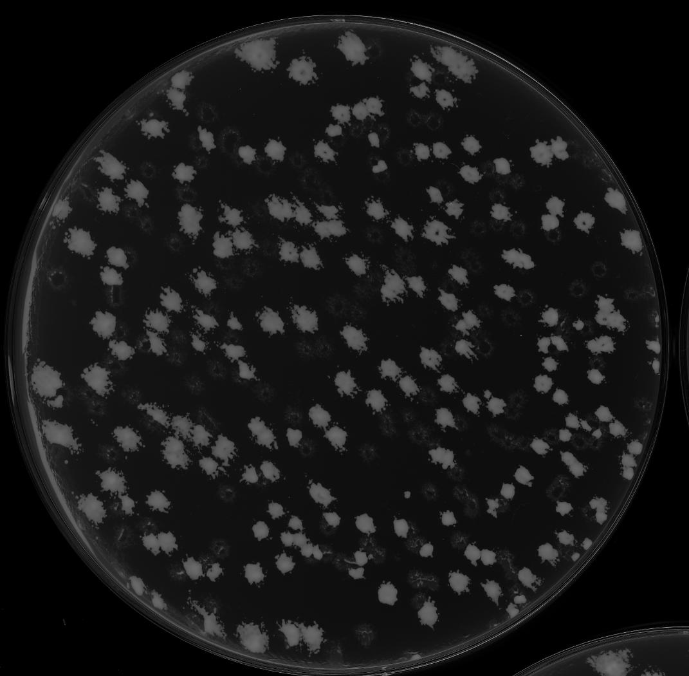
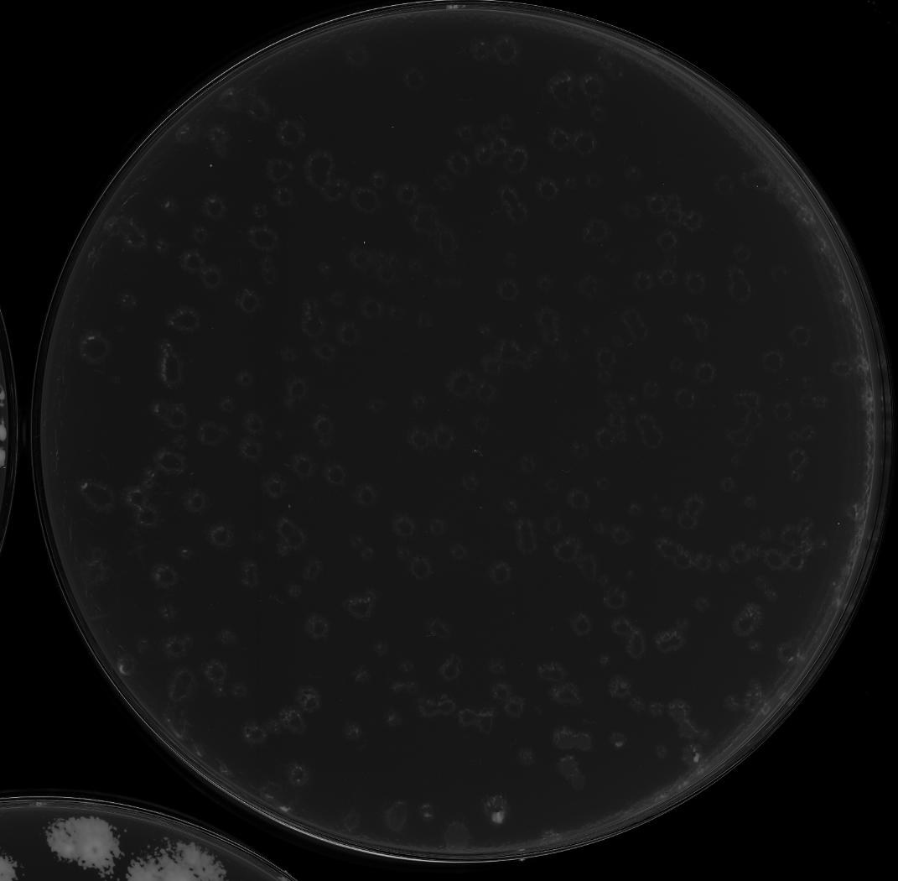
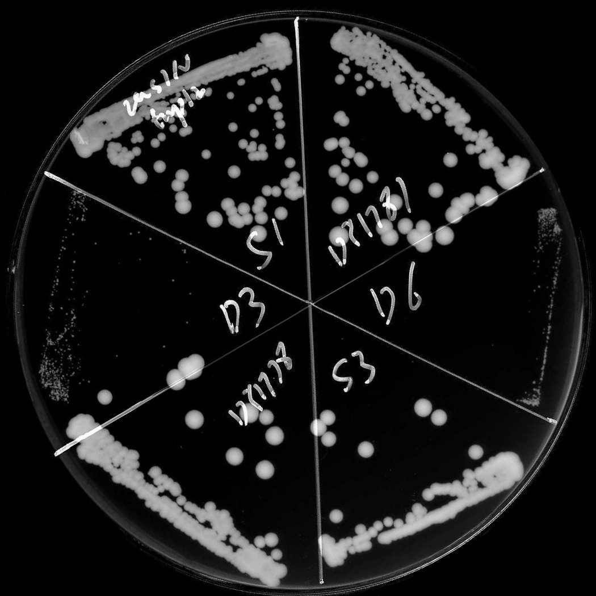

A
B
C
D
E
F
G

H
A: Candidate | No selection
B: Candidate | Selection for suppressor gene mutation
C: Candidate | Selection for essential and suppressor genes double mutation
D: Control | No selection
E: Control | Selection for suppressor gene mutation
F: Control | Selection for essential and suppressor genes double mutation
G: Quantification | Illustration of the strain arrangement of the semi-quantification plate
H: Quantification | Quantification in restreaking format